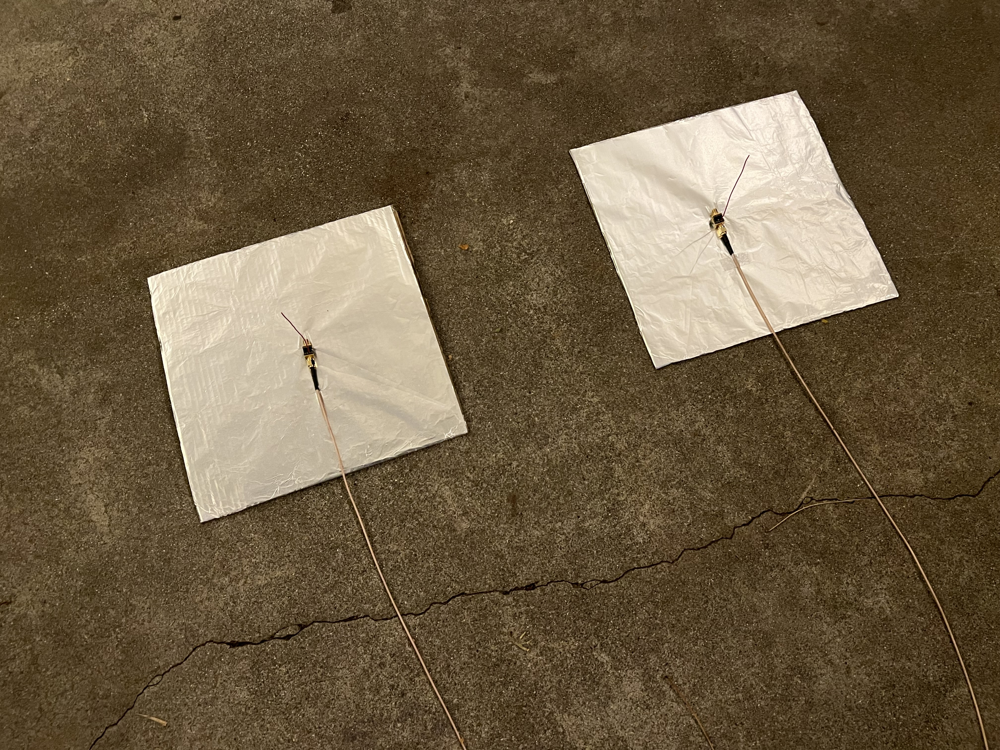
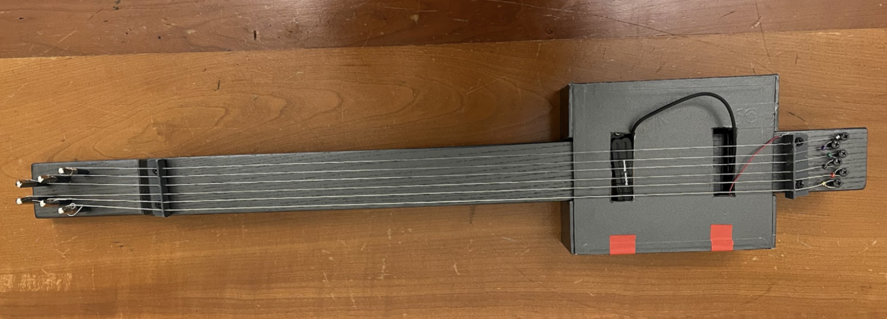
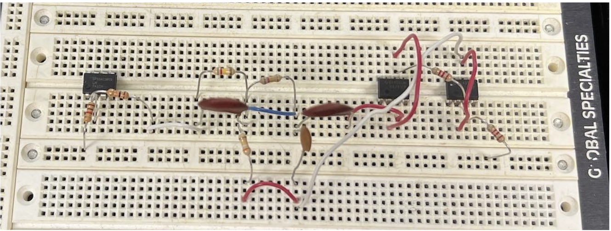
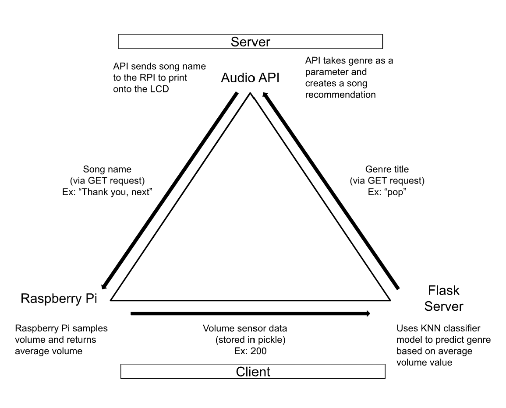
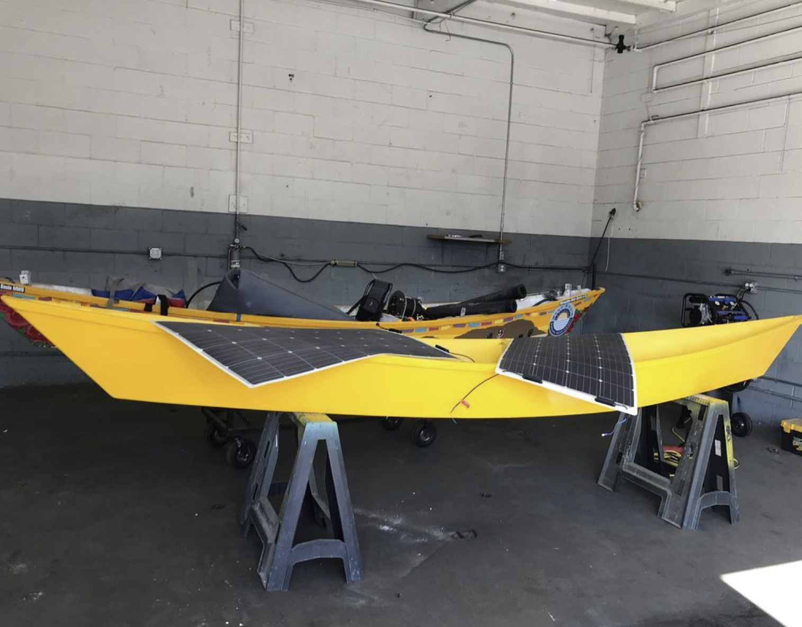

Featured Projects
Below are a select few of my most challenging projects that required a fair bit of research (and a lot of fun).
Monopole Communication Link (2023)
I explored the mutual impedance between two linear dipole antennas and the process of de-embedding test fixture effects in a communication link. I first created a communication link between two monopole antennas and measured their S-parameters using a NanoVNA. Observing discrepancies in the results caused by surface effects, I designed an algorithm to de-embed these effects, closely aligning the theoretical and measured values. I then incorporated Friis’ formula to predict the performance of the communication link and calculated the gain of half-wave and quarter-wave antennas.
FLICK PICK - A Collaborative Filtering-based Chrome Extension (2023)
View RepositoryCollaborated with a team to develop a Chrome extension that utilizes collaborative filtering to create personalized film recommendations on popular streaming sites. Project was part of Microsoft's annual summer Code Jam for interns and recieved the popular vote.
Super Mario for VGA (2023)
View RepositoryIn this project, I developed a platformer game inspired by the 8-bit Super Mario for VGA using Verilog, Nexys 4, and Vivado. The goal was to create a game where the player could move through a map with obstacles and enemies, collect coins, and reach the end. I designed various mechanics, including obstacles with unique behaviors, collision checks, and gravity for realistic jumping and falling. This project recieved the highest grade in the class for difficulty and creativity.
Electric Guitar with Notch-Filter for Signal Attenuation (2022)
In this project, I successfully built an electric guitar and designed a band-reject filter using a simple op-amp circuit to amplify the guitar pickup's electrical signal and reject specific frequencies. The project consisted of three main phases. In the first phase, I constructed the guitar using a wooden block as the neck and a cigar box as the body, with a Seymour Duncan pickup. In the second phase, I designed the band-reject filter to reject a selected frequency of 196 Hz. I experimented with different resistor and capacitor values using LTSpice and then built the circuit accordingly. In the third phase, I physically built the notch filter and connected it to the guitar pickup, producing sound from the guitar.
 Raspberry PI-Based K-Means for Music Genre Classification (2021)
In this project, I contributed to creating an IoT system that utilized K-means clustering, connecting a Raspberry Pi with RESTFUL APIs to recommend music based on sound sensor data. The process involved using sound sensors to collect data, which was then subjected to K-means clustering to determine the genre of the music. This genre information was used to search the top three tracks belonging to that genre which are displayed on the Raspberry Pi's LCD.
Solar Boat (2020)
In this year-long competition, I led a team of 20 students to design a 16-foot solar powered boat accompanied with several technical reports and a public service announcement on water conservation. Acheiving perfect scores on every technical report, the first time ever in my high-school's history, placed us as one of the few top scoring teams regionally across all competing schools in California. However, we never got to race our boat due to the pandemic.
